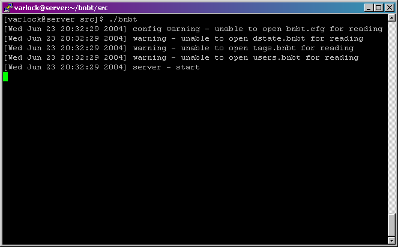

BNBT does not come with an installer. To run BNBT, simply execute the bnbt or bnbtmysql binary. For example,
BNBT may report warnings on startup (such as those seen above). Almost all warnings can be ignored. If BNBT encounters a fatal error it will automatically shutdown.
If you want to run BNBT in the background so that it continues to run even if you logout, use the 'screen' command. Simply type screen -dmS name ./bnbt at the terminal where 'name' is some descriptive name (and make sure the bnbt binary is in the current directory first). To attach to the screen, type screen -r name at the terminal. To detach from the screen, press Ctrl-A then press D.